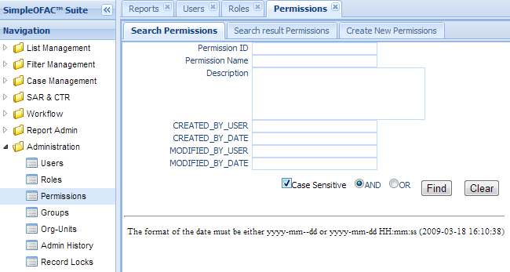
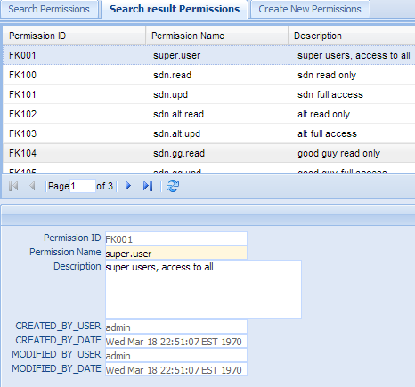
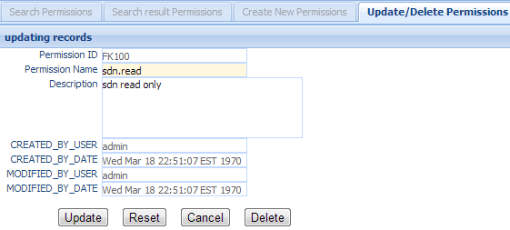
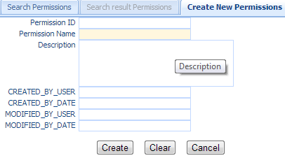

Permissions¶
Permissions govern access to functions within the system including the menu items and workflow actions. Permissions provide access to functional areas of the system. It combines with Organization Units and sanction lists’ Origin to govern access to the data.
Note
System level permissions that govern access to the menu items are defined by the system and should not be modified. User should only manages the user defined permissions; those are permissions on workflow actions and origins of sanction lists.
Click the Permissions in the left navigation menu under Administration, a new Permissions Tab folder will created in the right panel. There are 3 sub-Tab folders, Search Permissions, Search Result Permissions and Create New Permissions.
Search Permissions¶
Search Criteria
| Field Name | Description |
|---|---|
| Permission ID | unique record identifier |
| Permission Name | Name of this permission |
| Description | Description of this permission |
| CreatedByDate | Date and Time when this entry is created |
| CreatedByUser | User who create this entry. |
| ModifiedByDate | Last modified date and time. |
| ModifiedByUser | Last modified user. |
| AND | Select AND radio box if you want those criteria add together. |
| OR | Select OR radio box if you want to get the result if either criteria meet |
Functional buttons¶
- Find: – click Find button to search.
- Clear:– click Clear button to clear all the criteria.
Search Result Permissions¶
The top part is the table, shows the list of the permissions that meet the search criteria. The bottom part is the details of the selected entry.
Update/Delete Permissions¶
Double Click the selected record in the table to modify this entry. A new Tab folder “Update/Delete Permissions” will be added, as show below.
Functional buttons¶
- Update: – make changes on the permissions, and save and switch back to “Search result permissions” Tab. Some of the fields in this form are read only, like permission Id, created/modified user and date.
- Reset:– reset the data to its initial value, discard all the changes.
- Cancel:– Cancel this change and switch back to “Search result permissions” Tab.
- Delete:– Delete this entry and switch back to “Search result permissions” Tab.
Create New Permissions¶
Select the “Create New Permissions” Tab to create a new entry.
| Field Name | Description |
|---|---|
| Permission ID | unique record identifier |
| Permission Name | Name of this permission |
| Description | Description of this permission |
| CreatedByDate | Date and Time when this permissions entry is created. It is a read only field. |
| CreatedByUser | User who create this this permissions entry. It is a read only field. |
| ModifiedByDate | Last modified date and time; It is a read only field. |
| ModifiedByUser | Last modified user; It is a read only field. |
Functional buttons¶
- Create: – Click the Create button to create a new permissions entry and switch to “Search result Permissions” Tab.
- Clear:– Click the Clear button to clear all the fields
- Cancel:– Click the Cancel button to cancel operation and switch back to “Search result permissions” Tab.
Note
For permission on sanction list Origin, use the following name convention:
update permission: sdn.origin.upd. + ORIGIN name, eg: sdn.origin.upd.ofac, sdn.origin.upd.ns-plc; etc.
readonly permission: sdn.origin.read. plus ORIGIN name eg: sdn.origin.read.ofac, sdn.origin.read.ns-plc; etc.
For permission on workflow actions, use the following name convention:
workflow name + .action. + status name + action name
for example, wla.action.new.assigntoperson is a permission for watch list alert(wla) workflow.
It allows user to assign the alert to a Person when the alert is at New status.